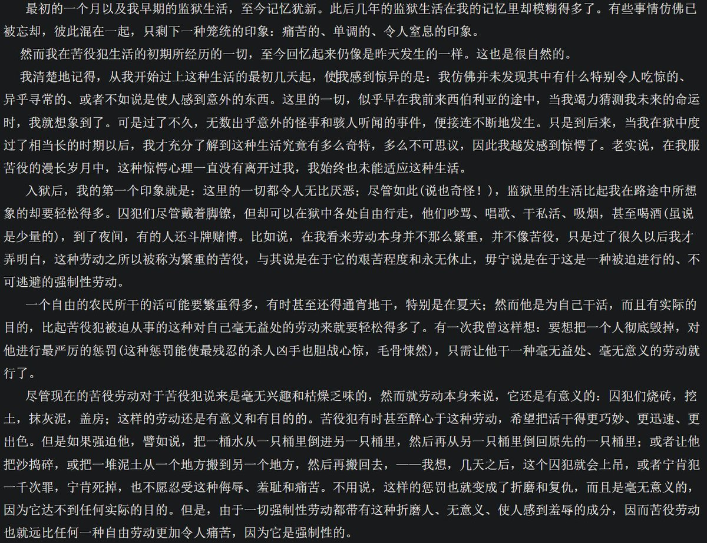

本来想继续去说他们各自的姿态问题，但想到毕竟是很久前读的加缪了，我想想，应该是2019年，印象过于模糊，有点担心是错怪了他。
他确实引用了很多陀氏的东西，但我用关键词检索也确实没搜到上述文段内容的直接引用，为保公允，重读一下再来写这个串。
有必要使我对他意见的及由此动机发端的 2/n

他确实引用了很多陀氏的东西，但我用关键词检索也确实没搜到上述文段内容的直接引用，为保公允，重读一下再来写这个串。
有必要使我对他意见的及由此动机发端的 2/n

加缪在哲学上其实是很弱的（萨特的理论本身也是种弱哲学，但加缪也与之毫无可比性），而事实上他给自己的定论也只是“一个男人”。
至于青春伤痛虚无主义必读书目的《西西弗斯神话》其中的这个神罚的核心母题，我曾怀疑直接就是洗稿陀氏关于牢狱经验的描写。
加缪真正强过萨特的地方可能就是会凹造型。 https://t.co/f6L6wAgqOA https://t.co/UArc2JJqHK
至于青春伤痛虚无主义必读书目的《西西弗斯神话》其中的这个神罚的核心母题，我曾怀疑直接就是洗稿陀氏关于牢狱经验的描写。
加缪真正强过萨特的地方可能就是会凹造型。 https://t.co/f6L6wAgqOA https://t.co/UArc2JJqHK